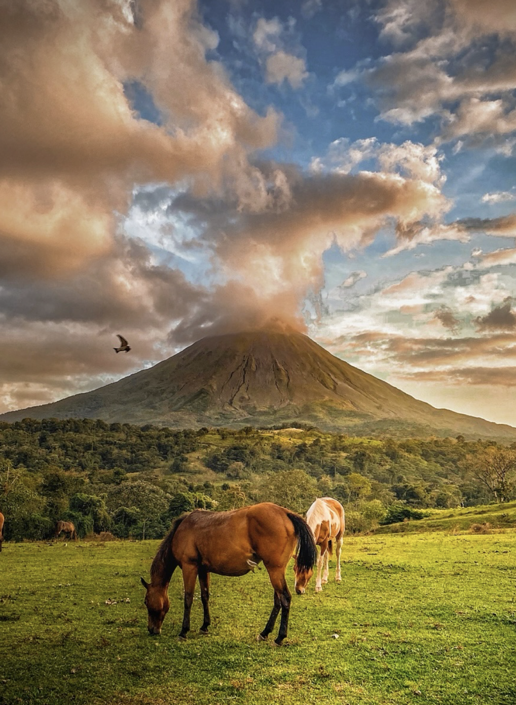
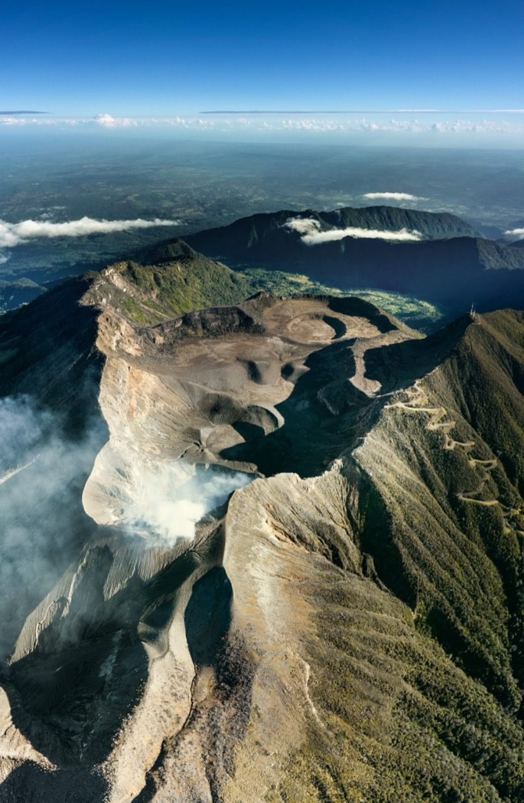
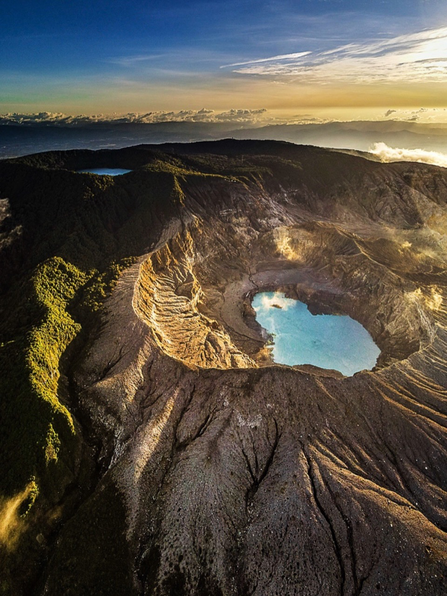
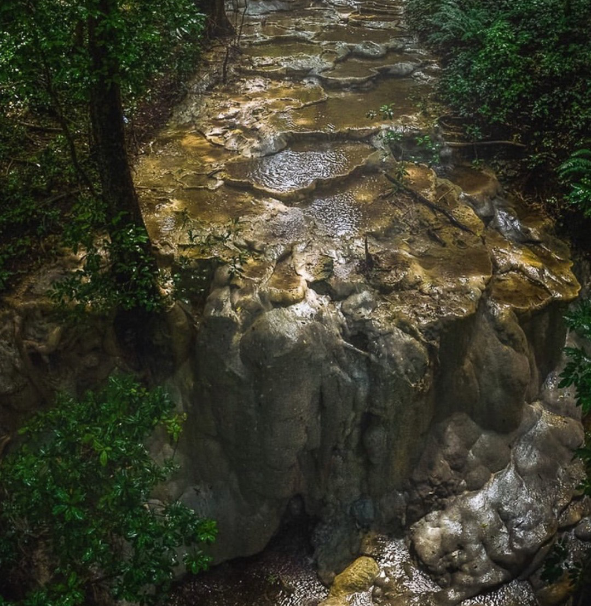

Costa Rica es un país de América Central con una gran riqueza natural. Sus playas, bosques y volcanes son el hogar de una gran variedad de especies de flora y fauna. Además, Costa Rica es conocida por su compromiso con la sostenibilidad y la protección del medio ambiente.



